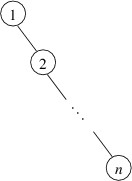
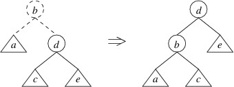

AVL Trees
Up to this point, we haven’t addressed the performance of binary search trees. In considering this performance, let’s assume that the time needed to compare two keys is bounded by some fixed constant. The main reason we do this is that this cost doesn’t depend on the number of keys in the tree; however, it may depend on the sizes of the keys, as, for example, if keys are strings. However, we will ignore this complication for the purpose of this discussion.
Each of the methods we have described for finding a key, adding a key and a value, or removing a key and its associated value, follows a single path in the given tree. As a result, the time needed for each of these methods is at worst proportional to the height of the tree, where the height is defined to be the length of the longest path from the root to any node. (Thus, the height of a one-node tree is $0$, because no steps are needed to get from the root to the only node - the root itself — and the height of a two-node tree is always $1$.) In other words, we say that the worst-case running time of each of these methods is in $O(h)$, where $h$ is the height of the tree.
Depending on the shape of the tree, $O(h)$ running time might be very good. For example, it is possible to show that if keys are randomly taken from a uniform distribution and successively added to an initially empty binary search tree, the expected height is in $O(\log n)$, where $n$ is the number of nodes. In this case, we would expect logarithmic performance for lookups, insertions, and deletions. In fact, there are many applications in which the height of a binary search tree remains fairly small in comparison to the number of nodes.
On the other hand, such a shape is by no means guaranteed. For example, suppose a binary search tree were built by adding the int keys 1 through $n$ in increasing order. Then 1 would go at the root, and 2 would be its right child. Each successive key would then be larger than any key currently in the tree, and hence would be added as the right child of the last node on the path going to the right. As a result, the tree would have the following shape:

The height of this tree is $n - 1$; consequently, lookups will take time linear in $n$, the number of elements, in the worst case. This performance is comparable with that of a linked list. In order to guaranteed good performance, we need a way to ensure that the height of a binary search tree does not grow too quickly.
One way to accomplish this is to require that each node always has children that differ in height by at most $1$. In order for this restriction to make sense, we need to extend the definition of the height of a tree to apply to an empty tree. Because the height of a one-node tree is $0$, we will define the height of an empty tree to be $-1$. We call this restricted form of a binary search tree an AVL tree (“AVL” stands for the names of the inventors, Adelson-Velskii and Landis).
This page contains a Java applet/application that displays an AVL tree of a given height using as few nodes as possible. For example, the following screen capture shows an AVL tree of height $7$ having a minimum number of nodes:

As the above picture illustrates, a minimum of $54$ nodes are required for an AVL tree to reach a height of $7$. In general, it can be shown that the height of an AVL tree is at worst proportional to $\log n$, where $n$ is the number of nodes in the tree. Thus, if we can maintain the shape of an AVL tree efficiently, we should have efficient lookups and updates.
Regarding the AVL tree shown above, notice that the tree is not as well-balanced as it could be. For example, $0$ is at depth $7$, whereas $52$, which also has two empty children, is only at depth $4$. Furthermore, it is possible to arrange $54$ nodes into a binary tree with height as small as $5$. However, maintaining a more-balanced structure would likely require more work, and as a result, the overall performance might not be as good. As we will show in what follows, the balance criterion for an AVL tree can be maintained without a great deal of overhead.
The first thing we should consider is how we can efficiently determine the height of a binary tree. We don’t want to have to explore the entire tree to find the longest path from the root — this would be way too expensive. Instead, we store the height of a tree as a private field in its root. If our nodes are mutable, we would also need to provide a public property to give read/write access to this field. However, such a setup places the burden of maintaining the heights on the user of the binary tree node class. Using immutable nodes allows a much cleaner (albeit slightly less efficient) solution. In what follows, we will show how to modify the definition of an immutable binary tree node so that whenever a binary tree is created from such nodes, the resulting tree is guaranteed to satisfy the AVL tree balance criterion. As a result, user code will be able to form AVL trees as if they were ordinary binary search trees.
In order to allow convenient and efficient access to the height, even for empty trees, we can provide a static method to take a binary tree node as its only parameter and return its height. Making this method static will allow us to handle empty (i.e., null) trees. If the tree is empty, this method will return $-1$; otherwise, it will return the height stored in the tree. This method can be public.
We then can modify the constructor so that it initializes the height field. Using the above method, it can find the heights of each child, and add $1$ to the maximum of these values. This is the height of the node being constructed. It can initialize the height field to this value, and because the nodes are immutable, this field will store the correct height from that point on.
Now that we have a way to find the height of a tree efficiently, we can focus on how we maintain the balance property. Whenever an insertion or deletion would cause the balance property to be violated for a particular node, we perform a rotation at that node. Suppose, for example, that we have inserted an element into a node’s left child, and that this operation causes the height of the new left child to be two greater than the height of the right child (note that this same scenario could have occurred if we had removed an element from the right child). We can then rotate the tree using a single rotate right:

The tree on the left above represents the tree whose left child has a height $2$ greater than its right child. The root and the lines to its children are drawn using dashes to indicate that the root node has not yet been constructed — we have at this point simply built a new left child, and the tree on the left shows the tree that would be formed if we were building an ordinary binary search tree. The circles in the picture indicate individual nodes, and the triangles indicate arbitrary trees (which may be empty). Note that the because the left child has a height $2$ greater than the right child, we know that the left child cannot be empty; hence, we can safely depict it as a node with two children. The labels are chosen to indicate the order of the elements — e.g., as “a” $\lt$ “b”, every key in tree a is less than the key in node b. The tree on the right shows that tree that would be built by performing this rotation. Note that the rotation preserves the order of the keys.
Suppose the name of our class implementing a binary tree node is BinaryTreeNode<T>, and suppose it has the following properties:
- Data: gets the data stored in the node.
- LeftChild: gets the left child of the node.
- RightChild: gets the right child of the node.
Then the following code can be used to perform a single rotate right:
/// <summary>
/// Builds the result of performing a single rotate right on the binary tree
/// described by the given root, left child, and right child.
/// </summary>
/// <param name="root">The data stored in the root of the original tree.</param>
/// <param name="left">The left child of the root of the original tree.</param>
/// <param name="right">The right child of the root of the original tree.</param>
/// <returns>The result of performing a single rotate right on the tree described
/// by the parameters.</returns>
private static BinaryTreeNode<T> SingleRotateRight(T root,
BinaryTreeNode<T> left, BinaryTreeNode<T> right)
{
BinaryTreeNode<T> newRight =
new BinaryTreeNode<T>(root, left.RightChild, right);
return new BinaryTreeNode<T>(left.Data, left.LeftChild, newRight);
}
Relating this code to the tree on the left in the picture above, the
parameter root refers to d, the parameter left refers to the tree
rooted at b, and the parameter right refers to the tree e. The
code first constructs the right child of the tree on the right and
places it in the variable newRight. It then constructs the entire tree
on the right and returns it.
Warning
Don’t try to write the code for doing rotations without looking at pictures of the rotations.
Now that we have seen what a single rotate right does and how to code it, we need to consider whether it fixes the problem. Recall that we were assuming that the given left child (i.e., the tree rooted at b in the tree on the left above) has a height $2$ greater than the given right child (i.e., the tree e in the tree on the left above). Let’s suppose the tree e has height $h$. Then the tree rooted at b has height $h + 2$. By the definition of the height of a tree, either a or c (or both) must have height $h + 1$. Assuming that every tree we’ve built so far is an AVL tree, the children of b must differ in height by at most $2$; hence, a and c must both have a height of at least $h$ and at most $h + 1$.
Given these heights, let’s examine the tree on the right. We have assumed that every tree we’ve built up to this point is an AVL tree, so we don’t need to worry about any balances within a, c, or e. Because c has either height $h$ or height $h + 1$ and e has height $h$, the tree rooted at d satisfies the balance criterion. However, if c has height $h + 1$ and a has height $h$, then the tree rooted at d has height $h + 2$, and the balance criterion is not satisfied. On the other hand, if a has height $h + 1$, the tree rooted at d will have a height of either $h + 1$ or $h + 2$, depending on the height of c. In these cases, the balance criterion is satisfied.
We therefore conclude that a single rotate right will restore the balance if:
- The height of the original left child (i.e., the tree rooted at b in the above figure) is $2$ greater than the height of the original right child (tree e in the above figure); and
- The height of the left child of the original left child (tree a in the above figure) is greater than the height of the original right child (tree e).
For the case in which the height of the left child of the original left child (tree a) is not greater than the height of the original right child (tree e), we will need to use a different kind of rotation.
Before we consider the other kind of rotation, we can observe that if an insertion or deletion leaves the right child with a height $2$ greater than the left child and the right child of the right child with a height greater than the left child, the mirror image of a single rotate right will restore the balance. This rotation is called a single rotate left:

Returning to the case in which the left child has a height $2$ greater than the right child, but the left child of the left child has a height no greater than the right child, we can in this case do a double rotate right:

Note that we have drawn the trees a bit differently by showing more detail. Let’s now show that this rotation restores the balance in this case. Suppose that in the tree on the left, g has height $h$. Then the tree rooted at b has height $h + 2$. Because the height of a is no greater than the height of g, assuming all trees we have built so far are AVL trees, a must have height $h$, and the tree rooted at d must have height $h + 1$ (thus, it makes sense to draw it as having a root node). This means that c and e both must have heights of either $h$ or $h - 1$. It is now not hard to verify that the balance criterion is satisfied at b, f, and d in the tree on the right.
The only remaining case is the mirror image of the above — i.e., that the right child has height $2$ greater than the left child, but the height of the right child of the right child is no greater than the height of the left child. In this case, a double rotate left can be applied:

We have shown how to restore the balance whenever the balance criterion is violated. Now we just need to put it all together in a public static method that will replace the constructor as far as user code is concerned. In order to prevent the user from calling the constructor directly, we also need to make the constructor private. We want this static method to take the same parameters as the constructor:
- The data item that can be stored at the root, provided no rotation is required.
- The tree that can be used as the left child if no rotation is required.
- The tree that can be used as the right child if no rotation is required.
The purpose of this method is to build a tree including all the given nodes, with the given data item following all nodes in the left child and preceding all nodes in the right child, but satisfying the AVL tree balance criterion. Because this method will be the only way for user code to build a tree, we can assume that both of the given trees satisfy the AVL balance criterion. Suppose that the name of the static method to get the height of a tree is Height, and that the names of the methods to do the remaining rotations are SingleRotateLeft, DoubleRotateRight, and DoubleRotateLeft, respectively. Further suppose that the parameter lists for each of these last three methods are the same as for SingleRotateRight above. The following method can then be used to build AVL trees:
/// <summary>
/// Constructs an AVL Tree from the given data element and trees. The heights of
/// the trees must differ by at most two. The tree built will have the same
/// inorder traversal order as if the data were at the root, left were the left
/// child, and right were the right child.
/// </summary>
/// <param name="data">A data item to be stored in the tree.</param>
/// <param name="left">An AVL Tree containing elements less than data.</param>
/// <param name="right">An AVL Tree containing elements greater than data.
/// </param>
/// <returns>The AVL Tree constructed.</returns>
public static BinaryTreeNode<T> GetAvlTree(T data, BinaryTreeNode<T> left,
BinaryTreeNode<T> right)
{
int diff = Height(left) - Height(right);
if (Math.Abs(diff) > 2)
{
throw new ArgumentException();
}
else if (diff == 2)
{
if (Height(left.LeftChild) > Height(right))
{
return SingleRotateRight(data, left, right);
}
else
{
return DoubleRotateRight(data, left, right);
}
}
else if (diff == -2)
{
if (Height(right.RightChild) > Height(left))
{
return SingleRotateLeft(data, left, right);
}
else
{
return DoubleRotateLeft(data, left, right);
}
}
else
{
return new BinaryTreeNode<T>(data, left, right);
}
}
In order to build and maintain an AVL tree, user code simply needs to call the above wherever it would have invoked the BinaryTreeNode<T> constructor in building and maintaining an ordinary binary search tree. The extra overhead is fairly minimal — each time a new node is constructed, we need to check a few heights (which are stored in fields), and if a rotation is needed, construct one or two extra nodes. As a result, because the height of an AVL tree is guaranteed to be logarithmic in the number of nodes, the worst-case running times of both lookups and updates are in $O(\log n)$, where $n$ is the number of nodes in the tree.